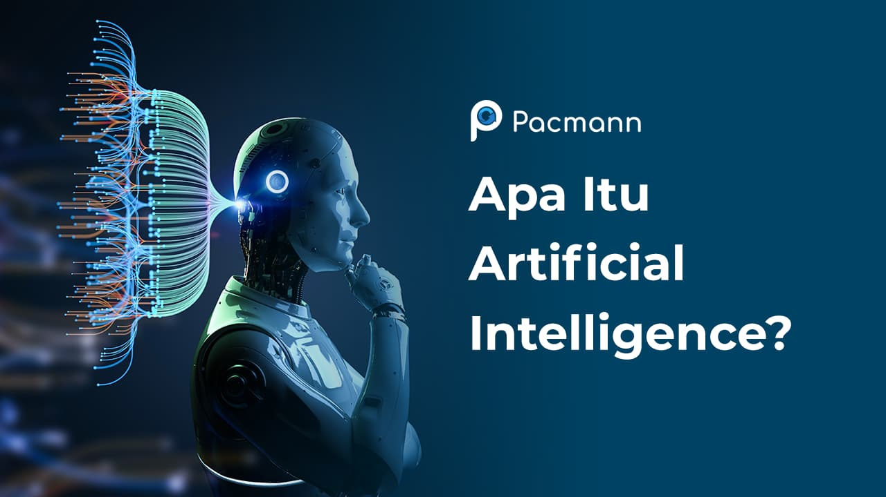
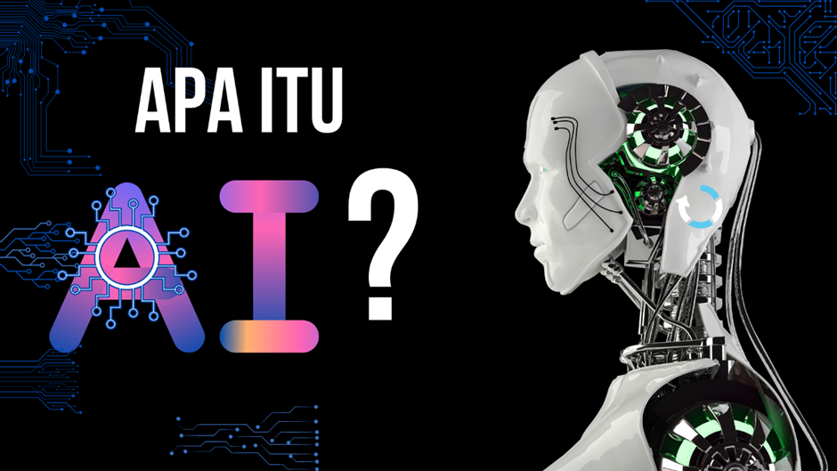

Kecerdasan buatan adalah kecerdasan yang ditambahkan kepada suatu sistem yang bisa diatur dalam konteks ilmiah atau bisa disebut juga intelegensi artifisial (bahasa Inggris: artificial intelligence) atau hanya disingkat AI, didefinisikan sebagai kecerdasan entitas ilmiah. Andreas Kaplan dan Michael Haenlein mendefinisikan kecerdasan buatan sebagai “kemampuan sistem untuk menafsirkan data eksternal dengan benar, untuk belajar dari data tersebut, dan menggunakan pembelajaran tersebut guna mencapai tujuan dan tugas tertentu melalui adaptasi yang fleksibel”. Sistem seperti ini umumnya dianggap komputer. Kecerdasan diciptakan dan dimasukkan ke dalam komputer agar dapat melakukan pekerjaan seperti yang dapat dilakukan manusia. Beberapa macam bidang yang menggunakan kecerdasan buatan antara lain sistem pakar, permainan komputer, jaringan saraf tiruan dan robotika. Secara teknis, kecerdasan buatan adalah model statistik yang digunakan untuk mengambil keputusan dengan menganalisis karakteristik dari suatu objek berbasis data yang kemudian dipasang di berbagai perangkat elektronik.
Saat ini, AI telah banyak digunakan di berbagai aplikasi seperti search engine, asisten virtual seperti Siri, Google Assistant, dan Cortana. Selain itu, pengembangan AI telah mencapai tingkat yang mengagumkan, salah satunya adalah penggunaannya dalam kendaraan otonom (self-drive) yang memungkinkan kendaraan melaju dengan sendirinya tanpa campur tangan manusia. Selain penggunaan tersebut, AI juga memiliki potensi besar untuk memajukan bidang-bidang lain seperti bidang pendidikan, kesehatan, ketahanan pangan, dan reformasi birokrasi.
Walaupun AI memiliki konotasi fiksi ilmiah yang kuat, AI membentuk cabangyang sangat penting pada ilmu komputer, berhubungan dengan perilaku, pembelajarandan adaptasi yang cerdas dalam sebuah mesin. Penelitian dalam AI menyangkutpembuatan mesin untuk mengotomatisasikan tugas-tugas yang membutuhkan perilakucerdas. Termasuk contohnya adalah pengendalian, perencanaan dan penjadwalan,kemampuan untuk menjawab diagnosa dan pertanyaan pelanggan, serta pengenalantulisan tangan, suara dan wajah. Hal-hal seperti itu telah menjadi disiplin ilmu tersendiri,yang memusatkan perhatian pada penyediaan solusi masalah kehidupan yang nyata.Sistem AI sekarang ini sering digunakan dalam bidang ekonomi, obat-obatan, teknik danmiliter, seperti yang telah dibangun dalam beberapa aplikasi perangkat lunak komputerrumah dan video game.
©2023 Teknik Elektro UNSIKA